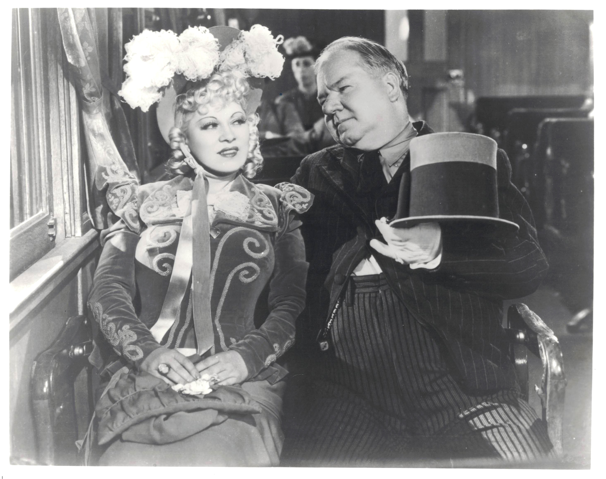

Product No. HEC-0032
$15.99
Shipping: $8.95
Description
8x10 B&W photo from "My Little Chicadee"
Full Description
W.C. Fields (Deceased) was an American comedian, actor, writer, and entertainer whose distinctive voice, comic timing, and cynical screen persona made him one of the most recognizable stars of classic Hollywood. He was born William Claude Dukenfield on January 29, 1880, in Darby, Pennsylvania, and began his career as a skilled juggler in vaudeville before becoming a Broadway and motion-picture performer. Fields developed a memorable character who was often pompous, irritable, dishonest, and frequently frustrated by children, animals, and authority figures. His humor relied heavily on elaborate wordplay, exaggerated storytelling, physical comedy, and his unmistakable gravelly delivery. Among his best-known films are "It's a Gift," "The Man on the Flying Trapeze," "You Can't Cheat an Honest Man," "The Bank Dick," "Never Give a Sucker an Even Break," and "My Little Chickadee." In "My Little Chickadee" (1940), Fields appeared opposite Mae West in their only feature film together, playing the boastful con man Cuthbert J. Twillie. Fields also contributed extensively to the writing of his films, sometimes using unusual pseudonyms. His comic style influenced generations of comedians and helped establish the sarcastic, anti-authoritarian character type in American comedy. W.C. Fields died on December 25, 1946, at age 66. His films, distinctive personality, and instantly recognizable appearance continue to make him a popular figure among classic movie fans and collectors of vintage Hollywood memorabilia. Mae West (Deceased) was an American actress, singer, playwright, screenwriter, and comedian who became one of the most famous and controversial stars of Hollywood’s Golden Age. Born Mary Jane West on August 17, 1893, in Brooklyn, New York, she began performing as a child and later became a successful vaudeville and Broadway entertainer. West was known for her glamorous image, confident personality, suggestive humor, and witty double entendres. She wrote and starred in several stage productions before moving to Hollywood, where she became one of Paramount Pictures’ biggest stars during the 1930s. Her best-known films include "She Done Him Wrong," "I'm No Angel," "Belle of the Nineties," "Klondike Annie," "Go West, Young Man," and "Every Day's a Holiday." In 1940, she starred opposite W.C. Fields in "My Little Chickadee," the only feature film the two comedy legends made together. West played Flower Belle Lee, while Fields portrayed the boastful con man Cuthbert J. Twillie. West frequently wrote or contributed to the dialogue and screenplays of her films, giving her unusually strong creative control for a female star of her era. Her provocative style often brought her into conflict with Hollywood censors, but it also helped establish her as an enduring symbol of independence and sexual confidence. Mae West died on November 22, 1980, at age 87. She remains an iconic figure in classic Hollywood and a popular subject among collectors of vintage movie memorabilia and autographs. "My Little Chickadee" is a 1940 Western comedy starring two of the most distinctive comic personalities of Hollywood’s Golden Age, Mae West and W.C. Fields. Produced by Universal Pictures and directed by Edward F. Cline, the film is especially notable because it was the only feature movie in which West and Fields appeared together. Mae West stars as Flower Belle Lee, a glamorous and outspoken woman who is forced to leave her hometown after becoming involved with a mysterious masked bandit. While traveling west by train, she meets Cuthbert J. Twillie, played by W.C. Fields, a boastful gambler and con man who attempts to impress her with stories of wealth and importance. Flower Belle soon realizes that Twillie may be useful to her, and the two become involved in a comic marriage of convenience. Once they arrive in the frontier town of Greasewood City, Twillie unexpectedly finds himself appointed sheriff. This leads to a series of comic confrontations, misunderstandings, romantic complications, and encounters with dangerous outlaws. Fields brings his trademark bluster, wordplay, and physical comedy to the role, while West delivers the confident, flirtatious dialogue and double entendres that made her famous. "My Little Chickadee" remains a memorable showcase for both stars and is regarded as an important classic Hollywood comedy. Its combination of Western parody, sophisticated humor, and the contrasting personalities of Mae West and W.C. Fields has helped the film remain popular with collectors and fans of vintage American cinema.
Condition
Excellent condition